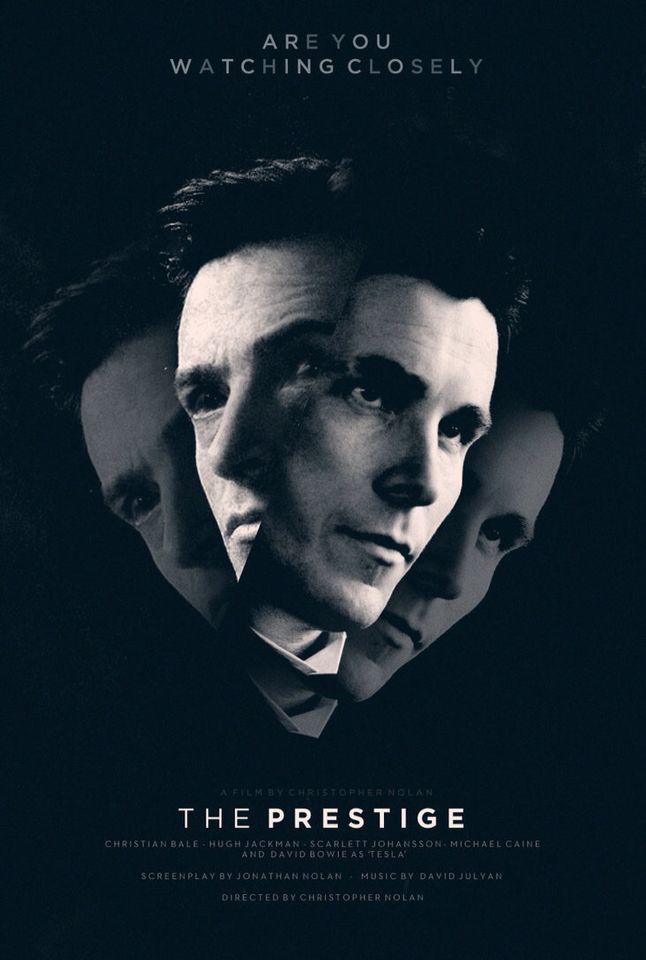

Filmler
The Prestige
Tür: Psikolojik gerilim
Yönetmen: Christopher Nolan
Konusu: The Prestige, 19. yüzyıl sonlarında Londra’da geçen, iki yetenekli sihirbazın—Robert Angier ve Alfred Borden—arasında yaşanan takıntılı rekabeti konu alır. Başlangıçta birlikte çalışan bu iki sihirbaz, bir gösteri sırasında yaşanan trajik bir olay sonrası birbirlerine düşman olur. Angier, sahne şovlarına önem veren karizmatik bir şovmenken; Borden, daha teknik ve yenilikçi bir sihirbazdır. Aralarındaki düşmanlık, yıllar boyunca giderek büyür. Her biri, diğerinin sırrını çözmeye ve onu alt etmeye çalışır. Özellikle Borden’ın yaptığı "Taşınan Adam" (The Transported Man) adlı numara, Angier’i saplantılı bir şekilde bu sırrı çözmeye iter. Angier, bu sırrın peşinden bilim adamı Nikola Tesla'ya kadar gider ve ondan sıra dışı bir makine yaptırır. Bu noktadan itibaren film, sihir ile bilimin, gerçek ile illüzyonun iç içe geçtiği bir hâle gelir. Her iki karakter de, kariyerleri ve egoları uğruna büyük fedakârlıklar yapar. Ancak bu rekabet sadece mesleki değil, aynı zamanda duygusal ve ahlaki olarak da hayatlarını mahveder. Filmin sonunda büyük bir ters köşe yer alır ve izleyici, karakterlerin yaptığı fedakârlıkların, takıntının ve kimliğin ne denli çarpıcı sonuçlara yol açtığını öğrenir.
Filmin Detayına GitKuru Otlar Üstüne

Tür: Dram/Kurgusal
Yönetmen: Nuri Bilge Ceylan
Konusu: Kuru Otlar Üstüne, yönetmen Nuri Bilge Ceylan imzalı, derinlikli karakter çözümlemeleriyle dikkat çeken bir dram filmidir. Film, Doğu Anadolu’nun küçük bir kasabasında görev yapan Samet isimli bir resim öğretmeninin içsel dünyasını ve yaşamına dair kırılma anlarını merkezine alır. Samet, zorunlu görevini tamamlamak için bu kasabaya atanmış ve artık bu sürecin sona ermesini, tayininin çıkmasını umut eden, hayattan bezmiş bir öğretmendir. Öğrencileriyle mesafeli bir ilişkisi vardır ve kasaba hayatına uyum sağlamakta zorlanır. Umutsuzluk, karamsarlık ve tahammülsüzlük içindedir. En büyük arzusu bu sıkışmışlıktan kurtulmak ve İstanbul gibi büyük bir şehirde hayatına devam etmektir. Filmde, Samet’in bir öğrencisiyle yaşadığı yanlış anlaşılma üzerine başlatılan soruşturma, onun hayatında ciddi bir dönüm noktası olur. Bu süreçte karşılaştığı Nuray isimli idealist bir öğretmen, Samet’in düşüncelerini, duygularını ve dünyaya bakışını sorgulamasına neden olur. Nuray’ın geçmişi, hayata karşı duruşu ve idealleri, Samet’in iç dünyasında karmaşık çatışmalara yol açar. Film, bireyin kendi içindeki yalnızlıkla, hayal kırıklıklarıyla ve toplumun dayattığı rollerle hesaplaşmasını güçlü görsel anlatım ve uzun diyaloglarla işler. Doğal mekanlar, içsel monologlar ve karakterlerin çok katmanlı yapılarıyla varoluşsal bir sorgulama sunar.
Filmin Detayına GitInterstaller

Tür:Epik,Bilim Kurgu
Yönetmen: Christopher Nolan
Konusu: Interstellar, yakın gelecekte geçen, insanlığın yaşanmaz hâle gelen Dünya’yı terk etmek zorunda kaldığı bir bilim kurgu filmidir. Dünya’daki tarım sistemi çökmüş, iklim bozulmuş ve insanlık yok olmanın eşiğine gelmiştir. Bu ortamda eski NASA pilotu Cooper, çocuklarıyla birlikte çiftçilik yaparak hayatını sürdürmektedir. Bir gün Cooper, NASA'nın gizli bir şekilde yürüttüğü bir göreve dahil olur. Amaç, bir solucan deliği aracılığıyla başka galaksilerde yaşanabilir gezegenler bulmaktır. Cooper, bu görev için seçilir ve bilim insanı Dr. Brand ile birlikte uzaya açılır. Görev sırasında zaman, uzay ve yerçekimiyle ilgili olağanüstü fiziksel zorluklarla karşılaşırlar. Bu yolculuk boyunca hem kendi yaşamları hem de Dünya’daki insanlığın kaderi için büyük fedakârlıklar yapılır. Cooper, özellikle kızı Murph ile olan bağı sayesinde hem bilimsel hem de duygusal açıdan büyük kararlar alır. Film, zaman göreceliği, kara delikler, solucan delikleri, kuantum fiziği gibi konuları işlerken; sevgi, aile ve insanlık üzerine de derin duygusal katmanlar sunar.
Filmin Detayına GitThe Dark Knight

Tür:Aksiyon, Macera, Gerilim
Yönetmen: Christopher Nolan
Konusu: The Dark Knight, Christopher Nolan'ın yönettiği ve Batman serisinin ikinci filmidir. Film, Gotham City'yi karanlık bir suç dünyasının tehdit ettiği bir dönemde, Bruce Wayne'in Batman olarak adalet sağlamaya çalışırken karşılaştığı içsel çatışmaları ve dışsal düşmanları ele alır. Gotham'da suç oranı artarken, Batman, polisle birlikte şehirdeki suçlularla mücadele etmeye devam etmektedir. Ancak, Gotham’ı yeni bir tehdit beklemektedir: Joker adında, anarşist ve kaotik bir suçlu, şehri yok etmeyi ve Batman’i psikolojik olarak yıkmayı amaçlar. Joker, hiçbir amacı olmayan, sadece kaos yaratmaya odaklanan bir teröristtir ve Gotham'da kargaşa yaratmak için birçok ölümcül plan yapar. Joker’in Gotham’ı tehdit eden planları, Batman’in ve polis komiseri James Gordon’ın işbirliğini zorlaştırırken, harici düşmanlar ve ahlaki ikilemler de her adımda daha da karmaşık hale gelir. Harvey Dent, Gotham’ın yeni bölge savcısı, Joker’in planlarına karşı Batman’e destek verir ancak Joker, Harvey’in ahlaki değerlerini sarsarak onu Two-Face'e dönüştürür. Bu dönüşüm, Batman ve Gotham için büyük bir tehdit oluşturur. Film boyunca, Joker’in Gotham’a karşı açtığı psikolojik savaş, Batman’in adalet anlayışını test eder ve Bruce Wayne’in, kimliğini koruyarak hem Gotham’a hem de kendisine nasıl hizmet edebileceği konusunda derin bir içsel yolculuğa çıkmasına sebep olur.
Filmin Detayına Git